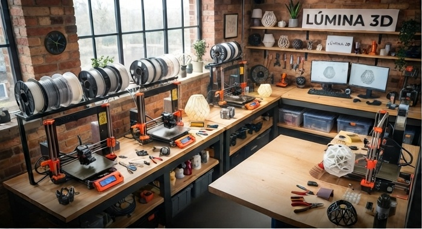
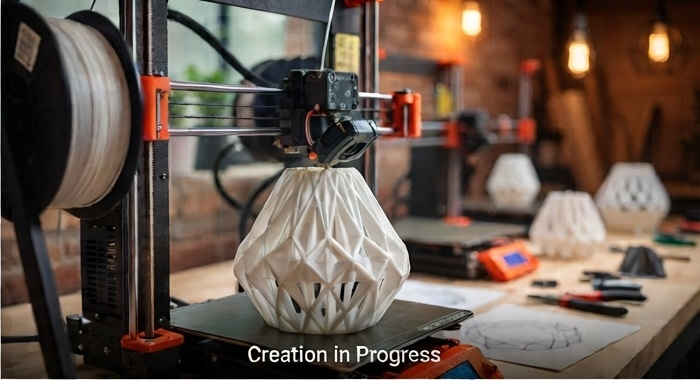
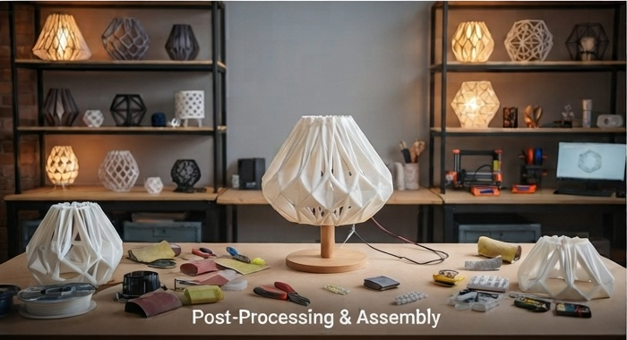
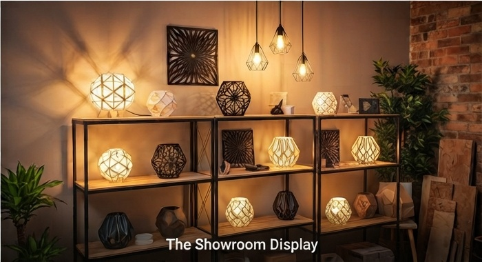

Nuestro proceso
Nuestro taller

Contamos con un taller propio equipado con impresoras 3D, estaciones de diseño digital y herramientas de precision. Esta infraestructura nos permite controlar cada etapa de la produccion y garantizar la calidad de nuestras piezas.
Fabricacion por impresion 3D

Cada lampara se fabrica capa por capa mediante impresion 3D, lo que hace posibles geometrias complejas y acabados unicos. Supervisamos cada impresion para asegurar precision y consistencia en el resultado final.
Acabado y ensamblaje

Tras la impresion, cada pieza pasa por un proceso artesanal de lijado, limpieza y terminacion. Despues se ensambla con su base y su sistema electrico para entregarla lista para usar, con la calidad que nos distingue.
Showroom

En nuestro showroom presentamos la coleccion completa en distintos diseños, tamaños y acabados. Es el espacio ideal para apreciar cada pieza encendida y descubrir como puede transformar el ambiente de tu hogar u oficina.